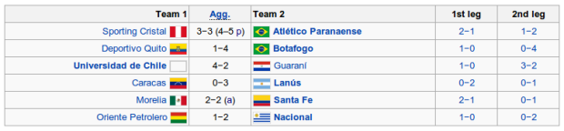

In this article, we will discuss how loss aversion impacts performance. We will see the fact that players perform better when they are losing.
In the article by Jack Ratcliffe in PinnacleSports.com [1], actual numbers in Tennis and Golf that prove loss aversion are mentioned. In this article, we shall focus on the game of football and will be focusing on certain games and how this loss aversion takes place. First, we will discuss a single game where one team already has a goal, using bookmaker odds. Second, we will discuss the outcomes of two-legged matches in Copa Libertadores. Since employees of the Running Ball department are more exposed to games in Latin America, we will be using examples from these leagues (Chilean Primera Division and Copa Libertadores).
Loss aversion simply means that “losing” teams work extra hard in order to avoid the loss. In psychology, we can just simply say humans hate to have things taken away from them.
After a goal
For our first example of loss aversion, we will be utilizing the game of Everton De Vina del Mar vs Deportes Union La Calera on 18-Mar-14. This is from the Chilean Primera Division. On the 36th minute of the game, E. Romero achieved a goal for the Everton making the game standing 1-0. The HT-AH is at level ball. From the odds itself (2.23 to 1.69), we can see that Union La Calera is actually predicted to score next, after the Everton goal. From this, we can say that even the bookmakers take into consideration loss aversion.
Two-legged Cup Matches

For the second example, we will be using the results from the first stage of the 2014 Copa Libertadores. The first game (Sporting Cristal vs Atletico Paranaense) and fifth game (Morella vs Santa Fe) are tied on aggregate (the score of both games added together). If tied on aggregate, the away goals rule applies. The away goals rule tells us that the team that has scored more goals away from home will win. For the fifth game, Santa Fe wins by this rule since it scored more goals away from home. For the first game, the result is still tied even with the away goals rule so a penalty shootout was used to determine the winner. Now, we will check each of the games to see the loss aversion in each game.
Loss aversion analysis on each of the 2014 Copa Libertadores first stage games
- Sporting Cristal vs Atletico Paranaense — On the first meeting, Atletico lost (2-1). On the second one, they managed to tie the score on aggregate. On the penalty shoot-out, Atletico won over-all (4-5).
- Deportivo Quito vs Botafogo — On the first meeting, Botafogo lost by 1-0. On the second they won by a whopping 0-4. By aggregate, Botafogo won over-all.
- Universidad de Chile vs Guarani — On the first meeting, Guarani lost without any single goal (1-0). On the second game, although Universidad de Chile won, Guarani improved by giving 2 goals. Universidad de Chile is the favorite team as far as standing is concerned, with 16 Primera Division trophies, 4 Copa Chile trophies, 1 in the Super Cup and 1 in Copa Sudamericana. Guarani is not seen as a strong team with only one trophy from Division Profesional. [3]
- Caracas vs Lanus — On the first meeting, Caracas lost by 2 goals from Lanus. On the second game, Caracas improved in defense, allowing only 1 goal from Lanus.
- Morella vs Sta. Fe — On the first meeting, Santa Fe lost with the score of 2-1. During the second game, Santa Fe won by 0-1, in Sta. Fe's home court. With this, since Morella has no points in the away court, Santa Fe has more goals away. Therefore, Santa Fe won over-all.
- Oriente Petrolero vs Nacional — On the first game, Nacional lost by 1-0. On the second game, Nacional won 0-2, making Nacional the over-all winner.
Seeing all the bold statements, we can see that all teams that lost in the first leg were able to either improve or even win over-all! Generally, it's like this: In the first game, __________ lost. In the second game, __________ either improved or won over-all! With this, we can clearly see that losing teams work harder in getting more goals or not letting the other team get more goals. Indeed, loss aversion is always in play and must be taken into account in both bookmaking and in betting.
References/Notes:
[1] http://www.pinnaclesports.com/online-betting-articles/04-2013/loss-aversion.aspx
[2] http://en.wikipedia.org/wiki/2014_Copa_Libertadores#Knockout_stages
[3] http://int.soccerway.com